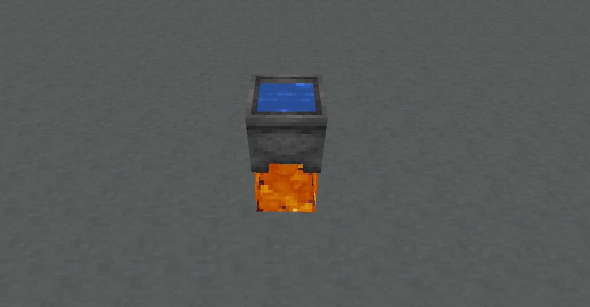
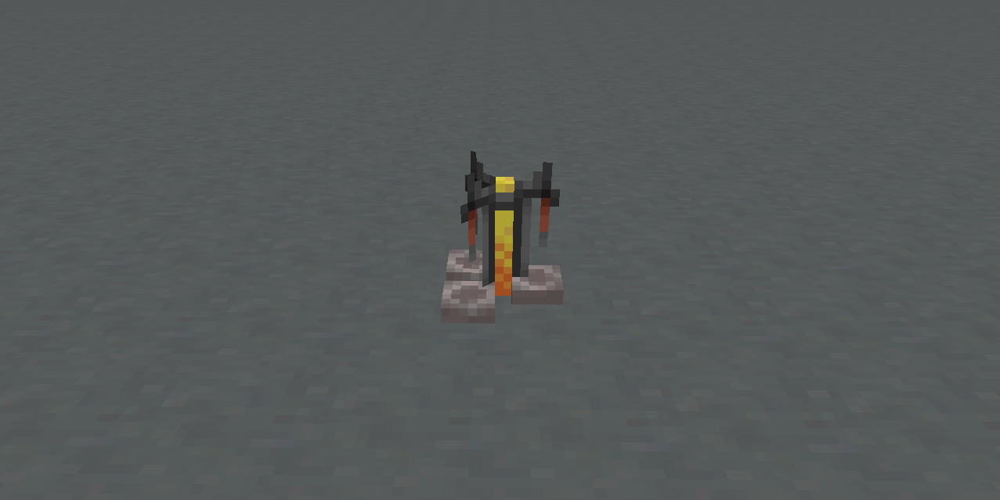
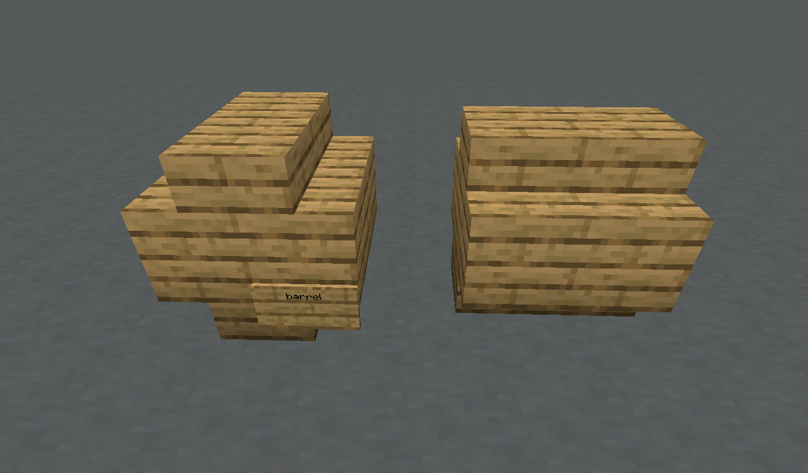
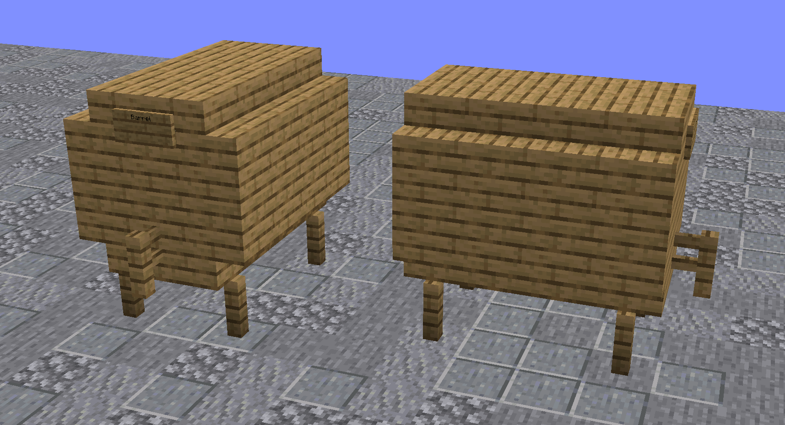

Алкоголизм
На нашем сервере вы можете варить различные алкогольные напитки, что добавляет интересный элемент игрового процесса.
Процесс приготовления
В отличие от обычного Minecraft, приготовление алкоголя здесь превращается в увлекательный и многослойный процесс. В зависимости от рецепта придётся пройти несколько этапов с высокой точностью - любая ошибка может повлиять на качество напитка и вызвать различные побочные эффекты.
Сложность создания качественных напитков делает их особенно ценными на сервере и побуждает экспериментировать с рецептами. При этом некоторые рецепты могут обходиться без выполнения всех описанных ниже шагов.
Ферментация
Первый этап - ферментация свежих ингредиентов:
- Установите котёл над огнём или другим источником тепла
- Наполните его водой
- Добавьте ингредиенты правым кликом
- Подождите несколько минут, пока ингредиенты будут бродить
- Разлейте смесь по стеклянным бутылкам

Дистилляция
Некоторые рецепты требуют дистилляции:
- Поместите бутылку с закваской в варочную стойку
- Добавьте светокаменную пыль в качестве фильтра сверху (фильтр не расходуется)

Выдержка
Маленькая бочка (9 слотов)
Чтобы создать маленькую бочку:
- Используйте 8 деревянных ступеней, расположив их в форме бочки
- Поставьте табличку в правом нижнем углу и напишите "Barrel" в верхней строке

Большая бочка (27 слотов)
Для создания большой бочки:
- Используйте 5 заборов, 16 деревянных ступеней и 18 деревянных досок
- Прикрепите кран (забор) и табличку с надписью "Barrel"

Чтобы разобрать бочку, просто сломайте табличку.
Как использовать бочку:
- Откройте её, кликнув по ней
- Поместите бутылки внутрь для выдержки
- За каждый игровой день напиток выдерживается один год
- Тип древесины бочки может влиять на качество напитка (зависит от рецепта)
- Стандартная бочка всегда изготавливается из дуба
Употребление напитков
При употреблении алкогольных напитков вы получите различные эффекты:
- Затруднение движения (шатание при ходьбе)
- Возможные эффекты слепоты, спутанности сознания, отравления
- Изменение текста в чате (слова могут искажаться)
- Особо крепкие напитки могут вызвать отравление
Как протрезветь
После употребления алкоголя потребуется время, чтобы его действие прошло. Вы можете ускорить этот процесс:
- Выпейте молоко (или кофе)
- Съеште хлеб
Рецепты напитков
Пиво и Эли
| Рецепт | Ингредиенты | Время варки | Дистилляция | Выдержка/Древесина | Крепость |
|---|---|---|---|---|---|
| Пшеничное пиво | Пшеница - 3 шт. | 8 мин. | Нет | 2 дня (Берёза) | 5% |
| Пиво | Пшеница - 6 шт. | 8 мин. | Нет | 3 дня (Любая) | 6% |
| Тёмное пиво | Пшеница - 6 шт. | 8 мин. | 3 раза | 8 дней (Тёмный дуб) | 7% |
Вина и Медовухи
| Рецепт | Ингредиенты | Время варки | Дистилляция | Выдержка/Древесина | Крепость |
|---|---|---|---|---|---|
| Красное вино | Сладкие ягоды - 5 шт. | 5 мин. | Нет | 20 дней (Любая) | 8% |
| Медовуха | Тростник - 6 шт. | 3 мин. | Нет | 4 дня (Дуб) | 9% |
| Яблочная медовуха | Тростник - 6 шт. |
4 мин. | Нет | 4 дня (Дуб) | 11% |
| Яблочный сидр | Яблоки - 14 шт. | 7 мин. | Нет | 3 дня (Любая) | 7% |
| Яблочный ликёр | Яблоки - 12 шт. | 16 мин. | 3 раза | 6 дней (Акация) | 14% |
Крепкие напитки
| Рецепт | Ингредиенты | Время варки | Дистилляция | Выдержка/Древесина | Крепость |
|---|---|---|---|---|---|
| Виски | Пшеница - 10 шт. | 10 мин. | 2 раза | 18 дней (Ель) | 26% |
| Ром | Тростник - 18 шт. | 6 мин. | 2 раза | 14 дней (Дуб) | 30% |
| Водка | Картофель - 10 шт. | 15 мин. | 3 раза | Нет | 20% |
| Текила | Кактус - 8 шт. | 15 мин. | 2 раза | 12 дней (Берёза) | 20% |
| Джин | Пшеница - 9 шт. |
6 мин. | 2 раза | Нет | 20% |
| Абсент | Трава - 15 шт. | 3 мин. | 6 раз | Нет | 42% |
Особые и Безалкогольные
| Рецепт | Ингредиенты | Время варки | Дистилляция | Особенности | Эффекты |
|---|---|---|---|---|---|
| Огненный виски | Пшеница - 10 шт. |
12 мин. | 3 раза | 18 дней (Ель) | Алкоголь 28% |
| Кофе | Какао-бобы - 12 шт. |
2 мин. | Нет | Отрезвляет | Скорость, Реген |
| Горячий шоколад | Печенье - 3 шт. | 2 мин. | Нет | Безалкогольный | Спешка |
| Картофельный суп | Картофель - 5 шт. |
3 мин. | Нет | Безалкогольный | Лечение |